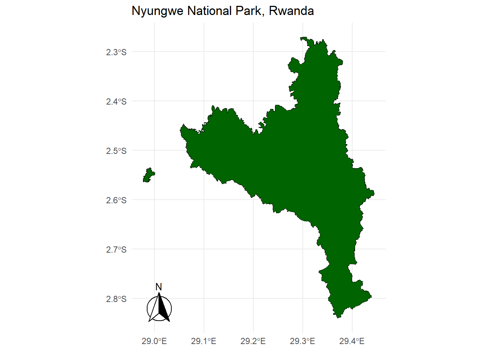
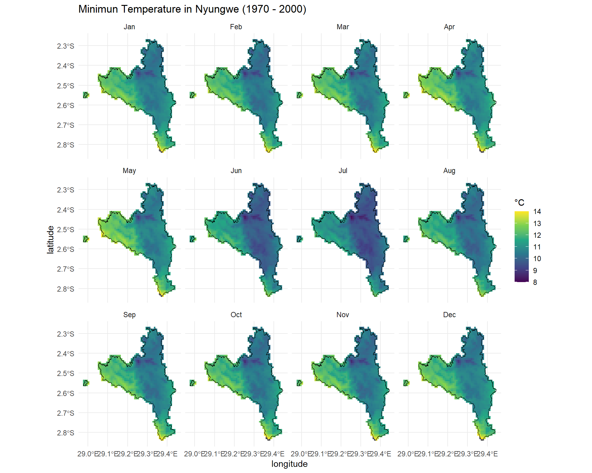
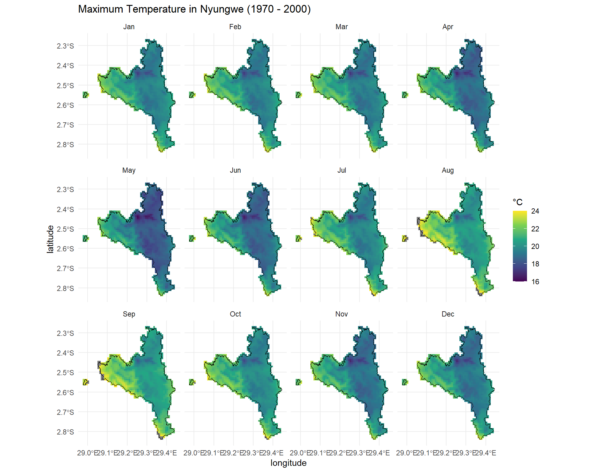
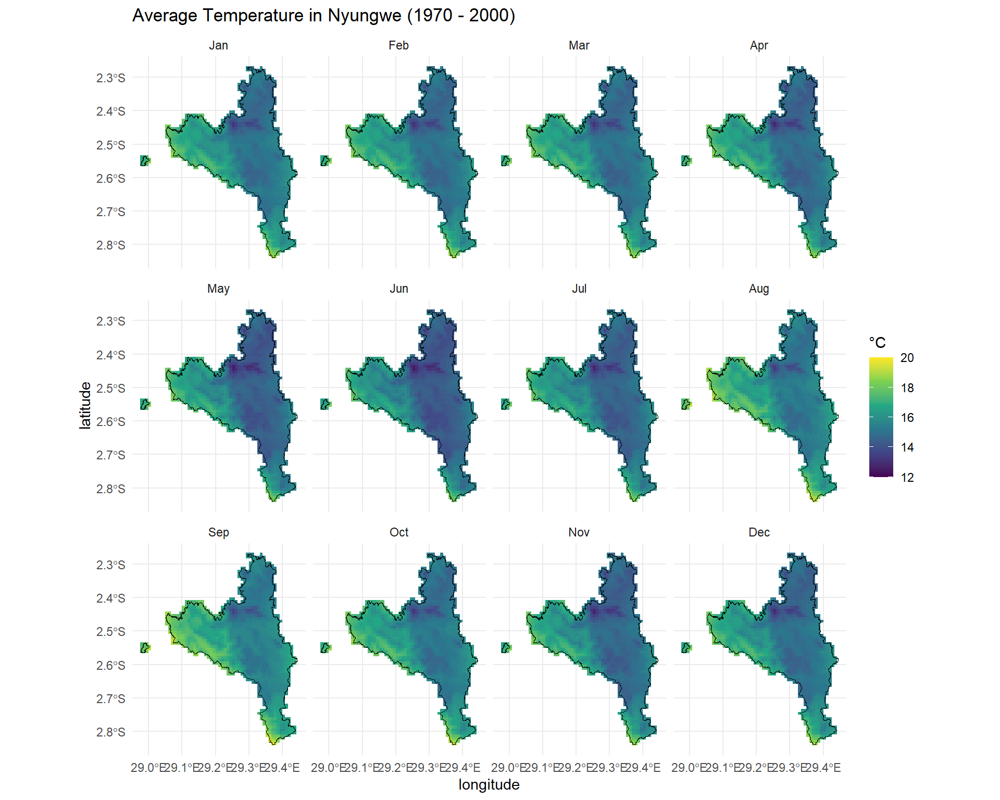
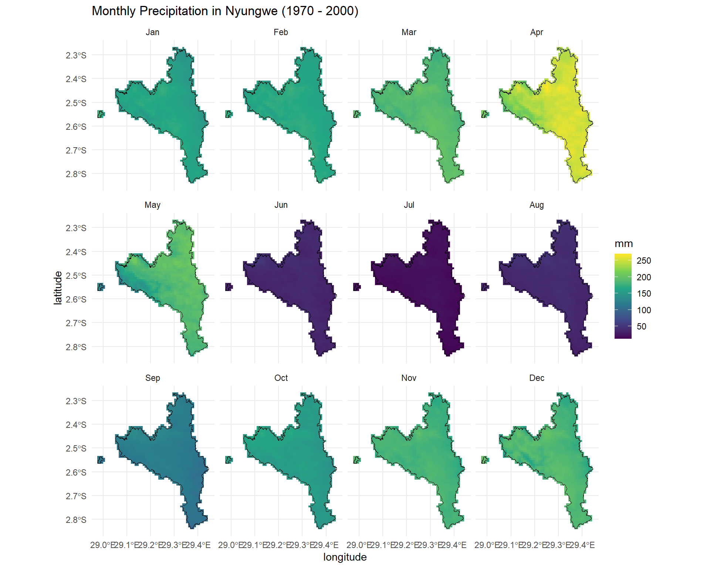
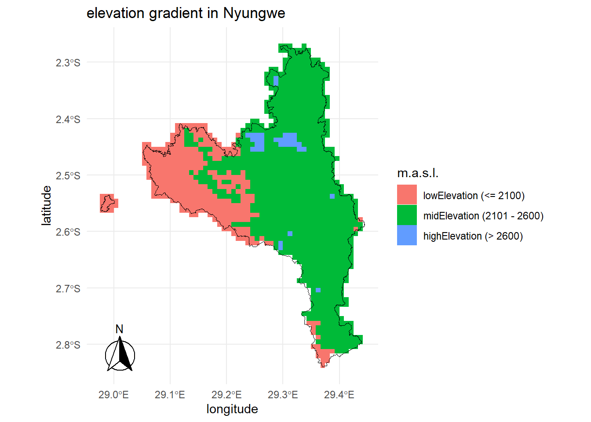

Climate variation in Nyungwe National Park (NNP), Rwanda
————————————————————
How does the monthly temperature and precipitation vary in NNP?
In this document, I am going to use the WorldClim dataset spanning between 1970 - 2000 to compare temperature variability in Nyungwe National Park, Rwanda. I am using the 0.5 minutes of a degree resolution, which is approximately 1 km resolution. This means, we can have an approximate value of temperature and precipitation of 1 km2 between 1970 and 2000.
Start by installing and loading necessary packages, then get data from worldClim climate data.
# librarylibrary(geodata)
Warning: package 'geodata' was built under R version 4.4.2
Loading required package: terra
Warning: package 'terra' was built under R version 4.4.2
terra 1.8.21
library(raster)
Warning: package 'raster' was built under R version 4.4.2
Loading required package: sp
Warning: package 'sp' was built under R version 4.4.2
── Conflicts ────────────────────────────────────────── tidyverse_conflicts() ──
✖ tidyr::extract() masks raster::extract(), terra::extract()
✖ dplyr::filter() masks stats::filter()
✖ dplyr::lag() masks stats::lag()
✖ dplyr::select() masks raster::select()
ℹ Use the conflicted package (<http://conflicted.r-lib.org/>) to force all conflicts to become errors
library(ggplot2)library(sf)
Warning: package 'sf' was built under R version 4.4.2
Linking to GEOS 3.13.0, GDAL 3.10.1, PROJ 9.5.1; sf_use_s2() is TRUE
library(ggspatial)
Warning: package 'ggspatial' was built under R version 4.4.2
# loading temperature and precipitation data from WorldClimtemp_min <-worldclim_global(var ="tmin", res =0.5, path ="01_data")temp_max <-worldclim_global(var ="tmax", res =0.5, path ="01_data")temp_mean <-worldclim_global(var ="tavg", res =0.5, path ="01_data")prec <-worldclim_global(var ="prec", res =0.5, path ="01_data")# loading Nyungwe National Park shapefilepark_shp <-st_read("../01_data/nyungweData/WDPA_WDOECM_Feb2025_Public_9148_shp-polygons.shp")
Reading layer `WDPA_WDOECM_Feb2025_Public_9148_shp-polygons' from data source
`C:\Users\lucky\OneDrive\Documents\climateNyungwe\01_data\nyungweData\WDPA_WDOECM_Feb2025_Public_9148_shp-polygons.shp'
using driver `ESRI Shapefile'
Simple feature collection with 1 feature and 30 fields
Geometry type: MULTIPOLYGON
Dimension: XY
Bounding box: xmin: 28.97665 ymin: -2.840358 xmax: 29.44459 ymax: -2.270143
Geodetic CRS: WGS 84
Plot Nyungwe shapefile
# Ploting Nyungwe National parkggplot() +geom_sf(data = park_shp, fill ="darkgreen", color ="black") +annotation_north_arrow(location ="bl",which_north ="true",style =north_arrow_fancy_orienteering() )+theme_minimal() +labs(title ="Nyungwe National Park, Rwanda")

How is the monthly minimum temperature changing in Nyungwe?
Using the mininum temperature value from the worldclim climate data, we can see how this varies in NNP. As seen in the Figure 1, Jun, Jul, and Aug tends to have the coldest minimun temperature compared to other months.
# crop raster files to the extent of Nyungwe National Parknyungwe_crop <- raster::crop(temp_min, park_shp)nyungwe_mask <- raster::mask(nyungwe_crop, park_shp)# creating a dataframe to usenyungwe_df <-as.data.frame(nyungwe_mask, xy =TRUE, na.rm =TRUE)colnames(nyungwe_df)[3:14] <- month.abbcolnames(nyungwe_df)[1:2] <-c("longitude", "latitude")# reshape the data to long format using tidyrnyungwe_df <-pivot_longer(nyungwe_df, cols = Jan:Dec,names_to ="month", values_to ="temperature")# converting month to an ordered factornyungwe_df$month <-factor(nyungwe_df$month, levels = month.abb)# plot using ggplotggplot()+geom_tile(data = nyungwe_df, aes(x = longitude, y = latitude,fill = temperature))+geom_sf(data = park_shp, fill =NA, color ="black")+scale_fill_viridis_c( limits =c(8, 14))+facet_wrap(~month, ncol =4)+theme_minimal()+labs(title ="Minimun Temperature in Nyungwe (1970 - 2000)", fill ="°C")

Figure 1: Minimum Temperature in NNP.
How does the monthly maximum temperature vary in Nyungwe?
Using the maximum temperature values, we can see that the maximum monthly temperature range between 16 and 24 degrees. The months of August and September display the highest maximum temperature, while the month of May display lowest maximum temperature. See Figure 2
# crop raster files to the extent of Nyungwe National Parknyungwe_maxt_crop <- raster::crop(temp_max, park_shp)nyungwe_maxt_mask <- raster::mask(nyungwe_maxt_crop, park_shp)# creating a dataframe to usenyungwe_max_df <-as.data.frame(nyungwe_maxt_mask, xy =TRUE, na.rm =TRUE)colnames(nyungwe_max_df)[3:14] <- month.abbcolnames(nyungwe_max_df)[1:2] <-c("longitude", "latitude")# reshape the data to long format using tidyrnyungwe_max_df <-pivot_longer(nyungwe_max_df,cols = Jan:Dec, names_to ="month",values_to ="temperature")# converting month to an ordered factornyungwe_max_df$month <-factor(nyungwe_max_df$month, levels = month.abb)# plot using ggplotggplot()+geom_tile(data = nyungwe_max_df, aes(x = longitude, y = latitude,fill = temperature))+geom_sf(data = park_shp, fill =NA, color ="black")+scale_fill_viridis_c( limits =c(16, 24))+facet_wrap(~month, ncol =4)+theme_minimal()+labs(title ="Maximum Temperature in Nyungwe (1970 - 2000)", fill ="°C")

Figure 2: Maximum Temperature in NNP.
How is the monthly average temperature changing in Nyungwe?
On average, the monthly temperature range between 12 and 20 degrees celsius, the months of May, June, and JUly being likely the coldest months of the year as seen in Figure 3.
# crop raster files to the extent of Nyungwe National Parknyungwe_avg_crop <- raster::crop(temp_mean, park_shp)nyungwe_avg_mask <- raster::mask(nyungwe_avg_crop, park_shp)# creating a dataframe to usenyungwe_avg_df <-as.data.frame(nyungwe_avg_mask, xy =TRUE, na.rm =TRUE)colnames(nyungwe_avg_df)[3:14] <- month.abbcolnames(nyungwe_avg_df)[1:2] <-c("longitude", "latitude")# reshape the data to long format using tidyrnyungwe_avg_df <-pivot_longer(nyungwe_avg_df, cols = Jan:Dec, names_to ="month",values_to ="temperature")# converting month to an ordered factornyungwe_avg_df$month <-factor(nyungwe_avg_df$month, levels = month.abb)# plot using ggplotggplot()+geom_tile(data = nyungwe_avg_df, aes(x = longitude, y = latitude,fill = temperature))+geom_sf(data = park_shp, fill =NA, color ="black")+scale_fill_viridis_c(limits =c(12, 20))+facet_wrap(~month, ncol =4)+theme_minimal()+labs(title ="Average Temperature in Nyungwe (1970 - 2000)", fill ="°C")

Figure 3: Average Temperature in NNP.
How does the monthly precipitation vary in Nyungwe?
The monthly precipitation range between 50 to 250 mm. The months of March, April, and May are the wettest months of the year, and June, July, and August the driest months of the year, see Figure 4.
# crop raster files to the extent of Nyungwe National Parknyungwe_prec_crop <- raster::crop(prec, park_shp)nyungwe_prec_mask <- raster::mask(nyungwe_prec_crop, park_shp)# creating a dataframe to usenyungwe_prec_df <-as.data.frame(nyungwe_prec_mask, xy =TRUE, na.rm =TRUE)colnames(nyungwe_prec_df)[3:14] <- month.abbcolnames(nyungwe_prec_df)[1:2] <-c("longitude", "latitude")# reshape the data to long format using tidyrnyungwe_prec_df <-pivot_longer(nyungwe_prec_df, cols = Jan:Dec,names_to ="month", values_to ="precipitation")# converting month to an ordered factornyungwe_prec_df$month <-factor(nyungwe_prec_df$month, levels = month.abb)# plot using ggplotggplot()+geom_tile(data = nyungwe_prec_df, aes(x = longitude, y = latitude, fill = precipitation))+geom_sf(data = park_shp, fill =NA, color ="black")+scale_fill_viridis_c(limits =c(12, 270))+facet_wrap(~month, ncol =4)+theme_minimal()+labs(title ="Monthly Precipitation in Nyungwe (1970 - 2000)", fill ="mm")

Figure 4: Monthly precipitation in NNP.
Overall, NNP is characterized by varying temperature depending on the topography. As seen in the preveous temperature figures, the west part of NNP is the hottest compared to the east part
How is the elevation changing in Nyungwe?
Regarding the elevation gradient in NNP, Figure 5 displays 3 different elevation gradient. The low elevation (less than 2100 m abose see level), mid elevation (found between 2101 and 2600 m), and high elevation (found above 2600 m). These elevation range are characterized by different vegetation type as described in various studies in Nyungwe such as the one by Fischer et al. (2024).
# getting elevation data from Rwanda using geodata packageelev <-elevation_30s(countr ="Rwanda", path ="01_data")nyungwe_elev <- raster::crop(elev, park_shp)nyungwe_elev_mask <- raster::mask(nyungwe_elev, park_shp)nyungwe_elev_df <-as.data.frame(nyungwe_elev_mask, xy =TRUE, na.rm =TRUE)colnames(nyungwe_elev_df)[1:2] <-c("longitude", "latitude")colnames(nyungwe_elev_df)[3] <-"elevation"# define the elevation rangenyungwe_elev_df$elevRange <-cut(nyungwe_elev_df$elevation,breaks =c(-Inf, 2100, 2600, Inf),labels =c("lowElevation (<= 2100)", "midElevation (2101 - 2600)","highElevation (> 2600)"))# plot elevation gradient using ggplotggplot()+geom_tile(data = nyungwe_elev_df, aes(x = longitude, y = latitude, fill = elevRange))+geom_sf(data = park_shp, fill =NA, color ="black")+scale_color_manual(values =c("darkblue", "darkgreen", "darkred"))+annotation_north_arrow(location ="bl",which_north ="true",style =north_arrow_fancy_orienteering() )+theme_minimal()+labs(title ="elevation gradient in Nyungwe", fill ="m.a.s.l.")

Figure 5: Elevation gradients in NNP.
There is an observable difference between the western and the eastern parts of Nyungwe National Park, primarily due to climatic reasons and secondarily due to geological/soil characteristics. Furthermore, from the botanical point of view, three zones can be observed. The lowel level of montane forest (1480 - 2100), the medium level of montane forest (2100 - 2600m), and the upper level of montane forest (2600 - 2900 m). The exact level of the transition between the zones can be between 100 - 200 m depending on the topography of the regions. See the pictures below for reference of how the vegetation in different zones looks like. Note that pictures were taken from Fischer et al. (2024).
At lower montane forest regions, forest communities are dominated by Parinari excelsa, Carapa wohllebenii, Newtonia buchananii, and the endemic Pentadesma reyndersii Sprilet (Clusiaceae) occurs here. The lower montane forest is mostly restricted to the western part of Nyungwe (mostly Gisakura, Karamba, and between Pindura and Bweyeye).
Montane forest belt at medium altitudes is well developed near Uwinka, the forest communities are dominated by Ocotea michelsonii, Syzygium guineense, Belschmiedia rwandensis, Macaranga kilimandcharica, Balthasaria schliebenii, and as you move toward the eastern part Macaranga kilimandcharica and Neoboutonia macrocalyx are dominant.
The higher mountain elevation comprising the Bigugu massif are covered by a characteristic cloud forest of trees with coriaceous leaves, which benefits from high precipitation mainly as fog. Dominant tree species in this belt include Psychotria mahoni, Podocarpus milanjianus, Syzygium parvifolium, the abundant shrub is Mimulopsis solmsii. The forest is also characterized by large number of epiphytes, especially bryophytes and lichens.
Lower montane forest
Lower montane forest
Mid-altitude montane forest
High elevation montane forest
High elevation montane forest
References
Fischer, Eberhard, Aimable Nsanzurwimo, Bonny Dumbo, Ronny Richter, and Jean Pierre Vande Weghe. 2024. “An Updated Checklist of Vascular Plants (Lycophytes, Ferns, Gymnosperms, Angiosperms) from Nyungwe National Park (Incl. Cyamudongo Forest), Rwanda.”Phytotaxa 673 (1): 1–113. https://doi.org/10.11646/phytotaxa.673.1.1.